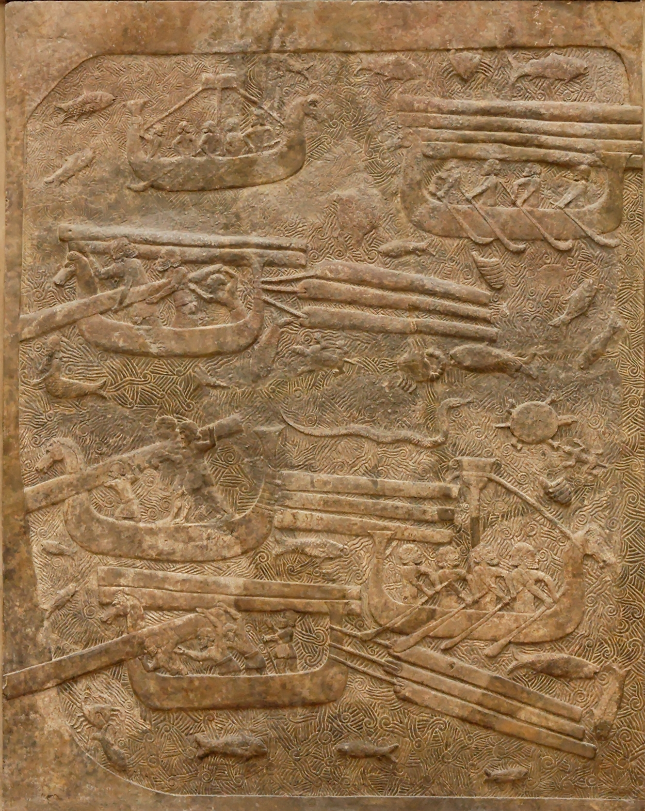

Khorsabad Cedar Transport Relief

- Find Name
- Khorsabad Cedar Transport Relief
- Description
- A large gypsum relief from Courtyard VIII of the palace of Sargon II at Dur-Sharrukin (Khorsabad), extending over three complete slabs and at least a fourth incomplete slab, now in the Louvre. It depicts a great convoy of boats on stylized waves - teeming with fish, crabs, tortoises, and sea creatures - carrying or towing hewn cedar timbers, with other boats returning empty for a new load. The two fortresses in the scene have been read as Tyre and Arwad, or as Cyprus and a Phoenician port.
- Historical Period
- Iron Age II
- Evidence Class
- Contextual
- Interpretations
- The relief documents the Lebanon timber trade that supplied both Assyrian palaces and, a century earlier, Solomon's temple - the same cedar, the same Phoenician shippers, the same coast. The identification of the fortresses is debated, so the scene should be described as a timber convoy, not firmly as a Tyre tribute scene. It illuminates the logistics behind 1 Kings 5 and Ezra 3:7, where cedar from Lebanon is floated down for the temple.
- Alternative Names
- Transport of Lebanese Cedar Relief
- Related Places
- Related Books
- Related Events
- Scripture Illuminated
- Biblical Significance
- It shows how Lebanon cedar actually reached Mesopotamia - by Phoenician ship - the supply chain behind the temple-building accounts of Kings and Ezra.
- Artifact Date
- c. 713-716 BC
- Current Location
- Louvre, Paris
- Date Discovered
- 1843-1844
- Discovery Location
- Khorsabad, Iraq (Dur-Sharrukin, palace of Sargon II)
- Timeline Era
- Divided Monarchy
Awaiting Review Not yet checked against scholarly sources. Treat its claims as provisional until this entry is reviewed. About verification
Last reviewed: not yet reviewed